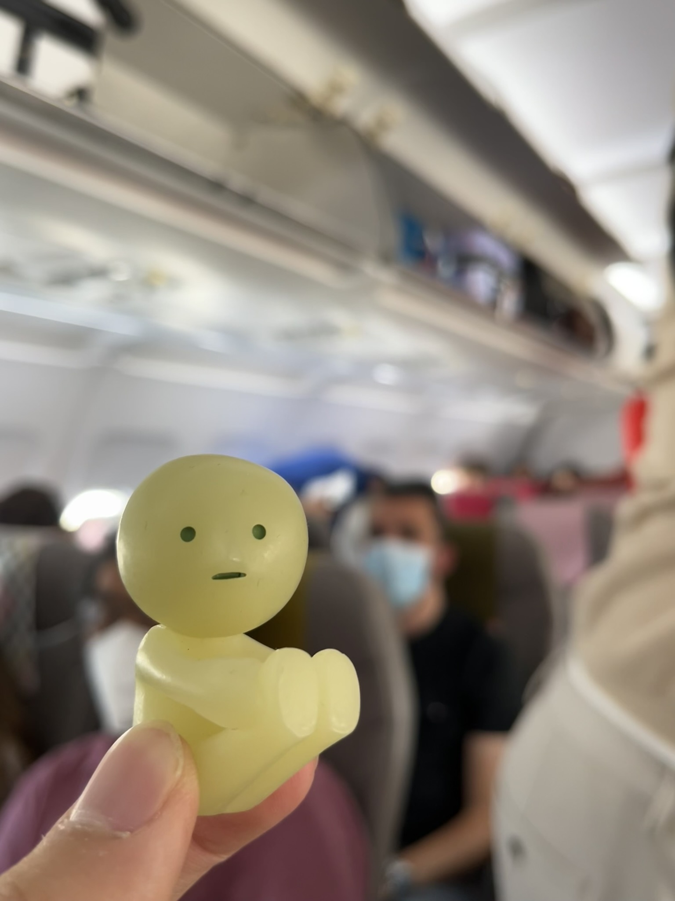
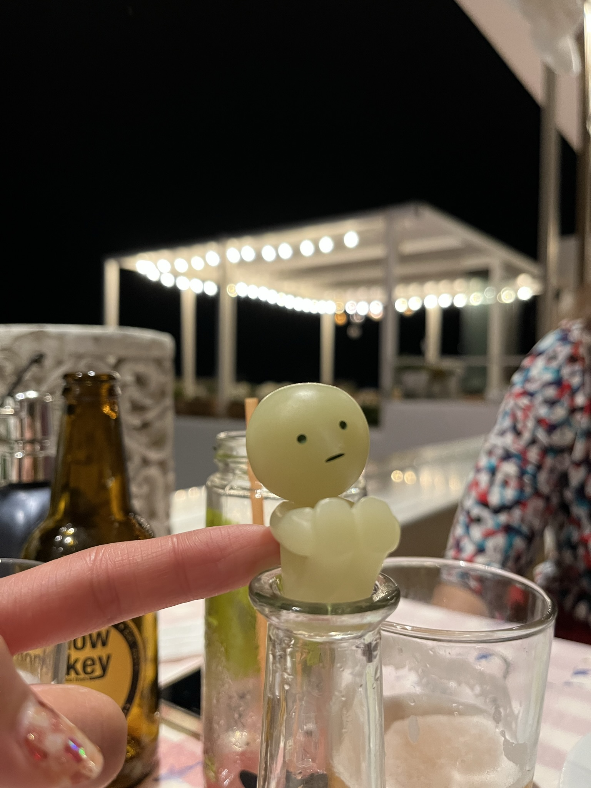

hi mom!
smike here. today’s a pretty short recap i think since most of it was transit
today’s flight out of zakynthos was at 11, so we had a much more reasonable morning and got to the airport and returned the car around 10. there were so many people! reminded me of pre-covid times hehe
this plane was tiny, even by greece standards. our climb up was literally five steps LOL it was so cute
and the view was great, per usual
when we got to the airport was when things got interesting we were originally planning to take the holiday inn shuttle back to our car, but we got there 5 mins too late and just missed it. we tried to find a taxi and ended up getting approached by this sus lady who kept reassuring that she was legal long story short, she got involved with the police (probably got a fine) who told us about the bus that we just missed. we went to the real taxi spot and found our it was hella expensive, so we decided to split up
the public bus was convenient but expensive too, so only gramps and auntie took it to get back to our car while grandma and dad and we all just chilled at the airport and figured out more plans (well, dad did while grandma and we napped lol). the car crew picked up some food on the way back, and we all ate the suprisingly good lunch on the car after they picked us up and found a spot in the parking lot. dad was really into it hehe
dad here: gramps took this video without my consent >:(

after what felt like forever, we finally boarded and were on our way to santorini! along with mykonos, it's among the most well known vacation/honeymoon spots in greece, so we were excited to see what the hype was all about!
immediately as we left the airport, we could feel a perceptible difference in the energy between santorini and zakynthos. as auntie put it, “there’s so many damn people”, and we all agreed. that being said, our hotel is damn nice!
after we got settled down, we took a walk to the city center for dinner. the walk itself was so cool, since santorini’s streets are all narrow pedestrian roads with these iconic tall white smooth walls
its not super clear in this pic but you can kinda see what walls i’m talking about. it was also right around sunset, so the colors of the sky were so pretty!
dad found this restaurant called ouzeri on reddit so we had dinner here. it’s kinda taverna style but a bit fancier than the ones we’ve been to. we weren’t super hungry so we just got the pastitsio and sea bass ceviche. dad stupidly left smatt and smark in our room and felt that we shld all be here, so he had to run back to the room. meanwhile, our food came and everyone else just waited impatiently until he came back sweating with the others
smatt immediately got a pic with the food, which was great but we were still hungry so we ordered a moussaka again since dad was craving it. we were all surprised when it came out in a pot, but as expected it was delicious! it did use a lot more bechamel than the first one we had so maybe a bit more unhealthy but yummm. we also enjoyed the pastitsio (kinda like actual pasta lasagna) and ceviche special
meanwhile we enjoyed the evening breeze and the rly cute decor of the restaurant. you can probably guess what part was smatt’s favorite smh (smatt here: and which one was smike's)

after that, we just walked around for a bit and headed home. it had been a messy and long day, so we were all tired. and then you asked dad if you could go on a dating spree... as if! dad’s not insecure like that. miss you, mom! i hope working reunions isn’t too tiring!
love,
smike (and others)